Installing usdview and Setting Up Python#
In this module, we’ll be conducting hands-on exercises using usdview, a lightweight and free application developed by Pixar Animation Studios. usdview is an essential tool for viewing, navigating, and introspecting OpenUSD scenes, and we’ll be using it for several of our Learn OpenUSD modules.
Before we begin, you’ll need to set up usdview on your system. usdview is compatible with Linux, macOS, and Windows. These instructions were written for Windows or Linux users. If you’re using macOS, you can still run usdview, but you’ll have to build it yourself using the OpenUSD repository.
Downloading the Libraries and Tools#
First, let’s download USD and Python.
Go to NVIDIA’s OpenUSD developer resources page.
Head to the Getting Started section.
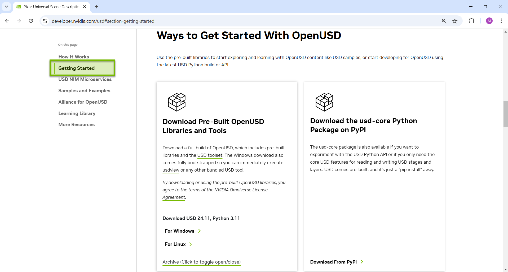
Download the OpenUSD libraries and tools that are suitable for your operating system.
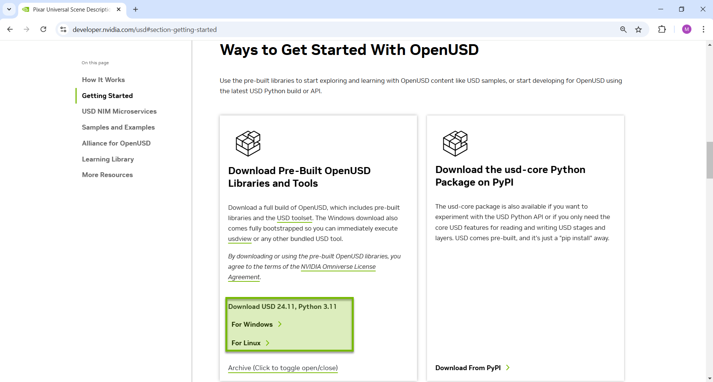
After downloading zipped folder, extract all. This may take a while.
Once the folder has finished unzipping, rename the extracted folder to
usd_root
We will be referring to this folder as usd_root/ going forward.
Now, let’s make sure everything works. We’ll be using Visual Studio Code in Windows for this example, but you can use your preferred IDE instead.
Note
For Linux: The following instructions are required to install missing X11 dependencies for Ubuntu. Do this before proceeding to the next step. We tested on Ubuntu 22.04 LTS and 24.04 LTS. You may need to adjust this command for newer versions of Ubuntu or other Linux distros.
Run:
sudo apt-get install libxkbcommon-x11-0 libxcb-xinerama0 libxcb-image0 libxcb-shape0 libxcb-render-util0 libxcb-icccm4 libxcb-keysyms1
Open Visual Studio Code.
Under File > Open Folder, find your
usd_root/folder.
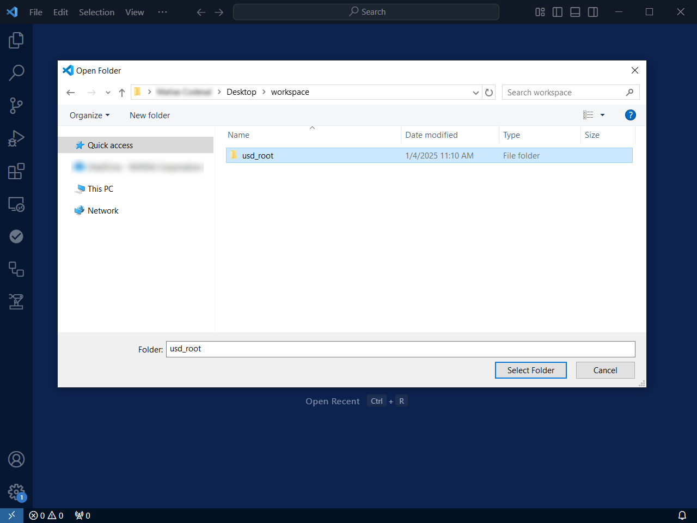
Open a new terminal by going to Terminal > New Terminal.
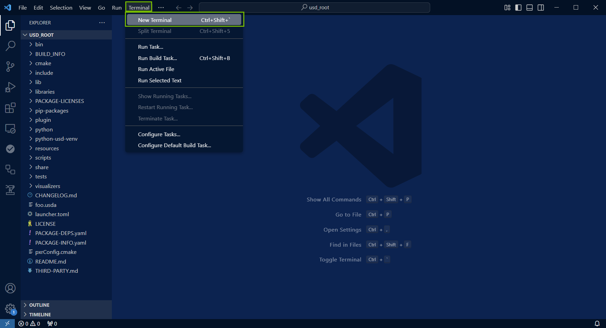
In this example, we are using PowerShell on Windows for our default terminal.
In the terminal, type the following command:
Windows:
.\scripts\usdview_gui.bat
Linux/macOS:
./scripts/usdview_gui.sh
Then, press Enter. It will open usdview’s
HelloWorld.usdafile.
Running .\scripts\usdview_gui.bat does not require a USD file to run the application. You can also run .\scripts\usdview.bat, but it requires you to provide a USD file as an argument.
Now is a good time to familiarize yourself with how to navigate the within the viewport.
Close usdview and proceed to the next step.
Note
For quick access, you can add the scripts/ folder in your PATH environment variable, but this isn’t required for these modules.
Setting Up the Python Environment#
The prebuilt OpenUSD binaries come with a version of Python to ensure a compatible Python environment. It is located under the python folder.
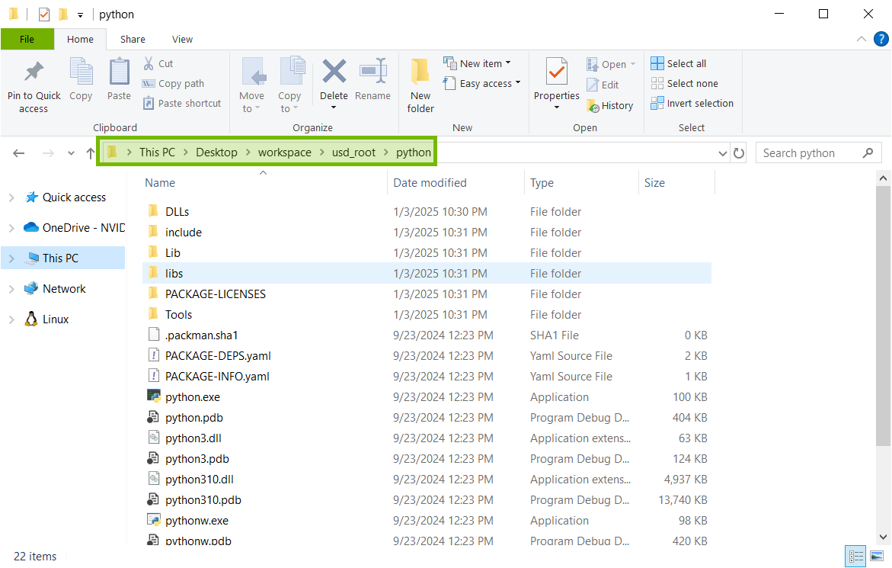
Here we will be going through how to set up a Python virtual environment and installing usd-core via pip.
We will be creating the virtual environment using Visual Studio Code.
Open Visual Studio Code.
Go to File > Open Folder.
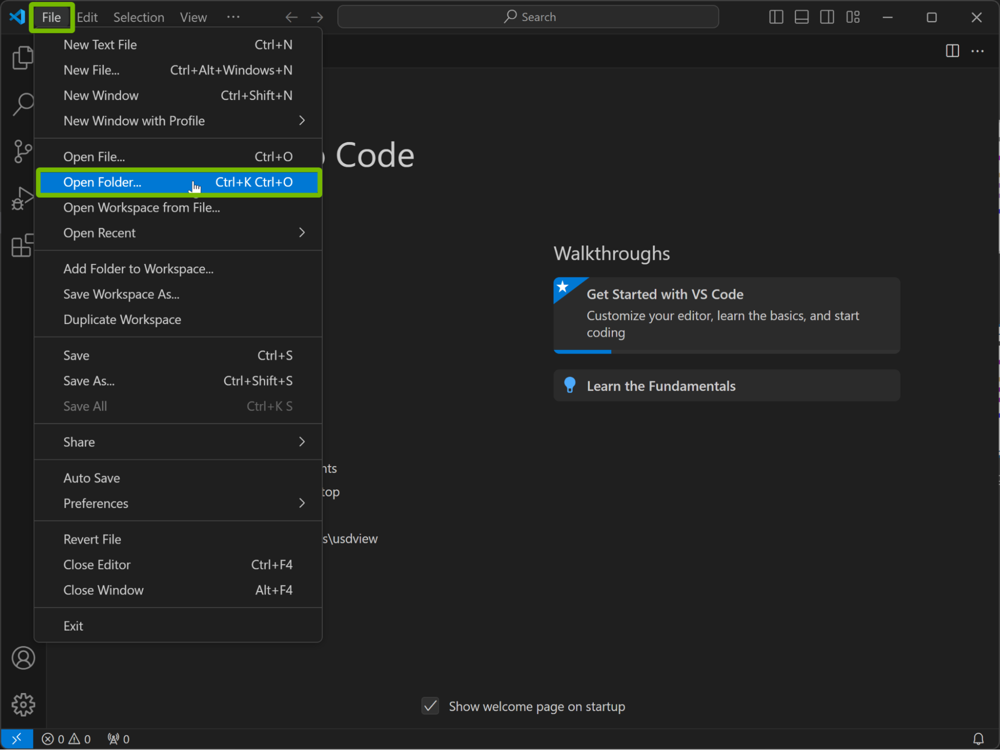
Open your downloaded OpenUSD binaries folder that you renamed to
usd_root/.
Open a terminal window by going to Terminal > New Terminal.
Run the following command in the terminal:
Windows:
.\python\python.exe -m venv .\python-usd-venv
Linux/macOS:
./python/python -m venv ./python-usd-venv
This will create a virtual Python environment in the current root directory.
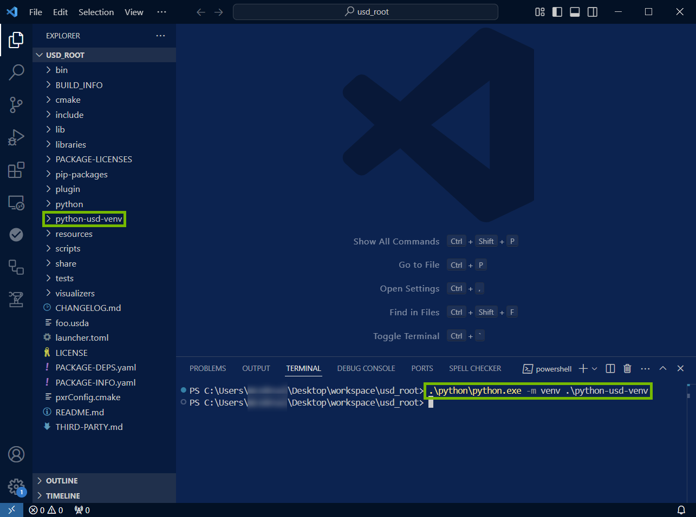
How to use the virtual environment depends on your platform and shell you are using. Please refer to the following table (which can also be found in the Python documentation), We’ve adapted the commands from the Python documentation to reflect the virtual environment name that we used in previous steps.
Shell |
Command to activate virtual environment |
|---|---|
bash/zsh |
source python-usd-venv/bin/activate
|
fish |
source python-usd-venv/bin/activate.fish
|
csh/tcsh |
source python-usd-venv/bin/activate.csh
|
cmd.exe |
python-usd-venv\Scripts\activate.bat
|
PowerShell |
python-usd-venv\Scripts\Activate.ps1
|
Note
For Windows/PowerShell, you may need to also set your execution policy first to allow the script to run. You can use the following command:
Set-ExecutionPolicy RemoteSigned -Scope CurrentUser
Activate your virtual environment with the appropriate command from the table above. The screenshot below shows the Windows command in PowerShell, and the proper response showing our Python virtual environment is now in use.
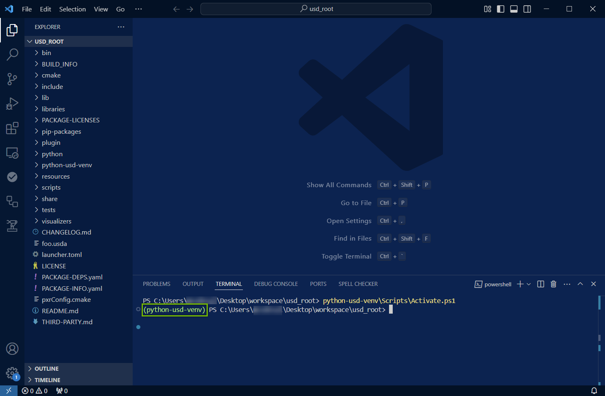
Installing usd-core#
Now we’ll install usd-core, which is a dependency that enables us to use the USD API.
Make sure to activate and run the Python virtual environment, which we did in the previous step. With the environment activated, run the following command to install
usd-core.
Windows:
pip install usd-core
Linux/macOS:
pip install usd-core
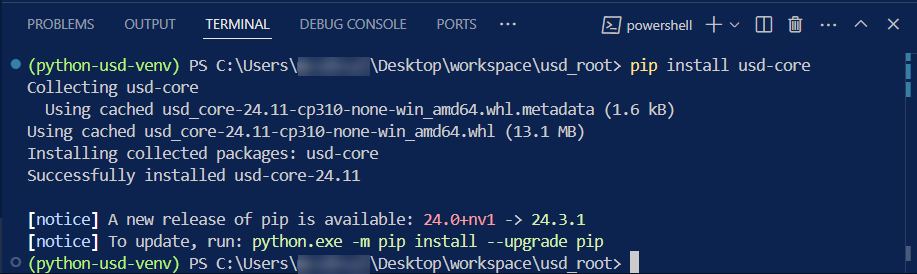
To check if
usd-corehas installed properly we can run the following command in your virtual environment.
Windows:
python -c "from pxr import Usd;print(Usd.GetVersion())"
Linux/macOS:
python -c "from pxr import Usd;print(Usd.GetVersion())"
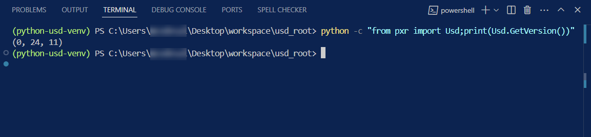
If successful, it will print out the current USD version.
Now you can use usd-core libraries inside your virtual environment.
Installing Assimp#
Make sure to activate and run the Python virtual environment. If you’re continuing from the previous section, this should already be complete.
With the environment running, run the following command to install
assimp.
Windows:
pip install assimp-py==1.0.8
Linux/macOS:
pip install assimp-py==1.0.8
Attention
Ensure you are installing assimp-py version 1.0.8 and not a newer version.
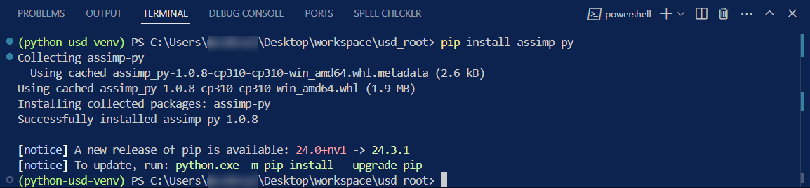
To check if
Assimphas installed properly we can run the following command in the virtual environment
Windows:
python -c "import assimp_py"
Linux/macOS:
python -c "import assimp_py"

If you received: ModuleNotFoundError: No module named 'assimp_py' then Assimp did not install properly. Otherwise, you are good to go.
Congratulations, you have everything you need installed to complete the Learn OpenUSD modules with usdview.
Resuming a Module#
If you are unable to complete this module in a single session or if you ever want to return to this module to refresh your knowledge, these are the steps you need to take to re-enable your environment.
Open Visual Studio Code.
Go to File > Open Folder.
Open your
usd_root/folder.
Open a terminal window by going to Terminal > New Terminal.
Run the appropriate command for your platform/shell to enable the virtual environment we previously created:
Shell |
Command to activate virtual environment |
|---|---|
bash/zsh |
source python-usd-venv/bin/activate
|
fish |
source python-usd-venv/bin/activate.fish
|
csh/tcsh |
source python-usd-venv/bin/activate.csh
|
cmd.exe |
python-usd-venv\Scripts\activate.bat
|
PowerShell |
python-usd-venv\Scripts\Activate.ps1
|
The screenshot below shows the Windows command in PowerShell, and the proper response showing our Python virtual environment is now in use.